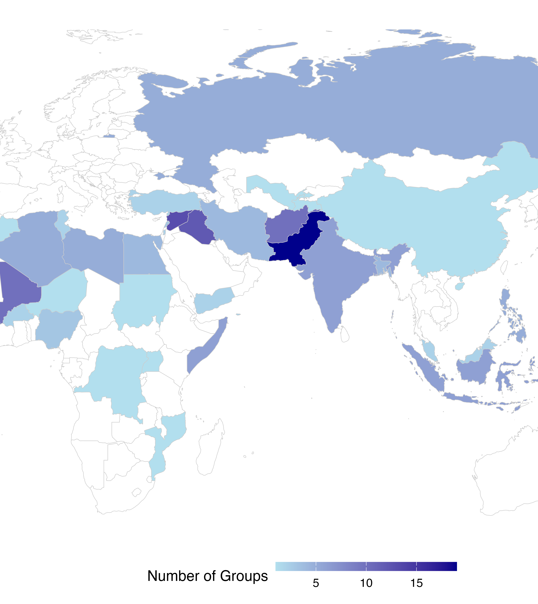
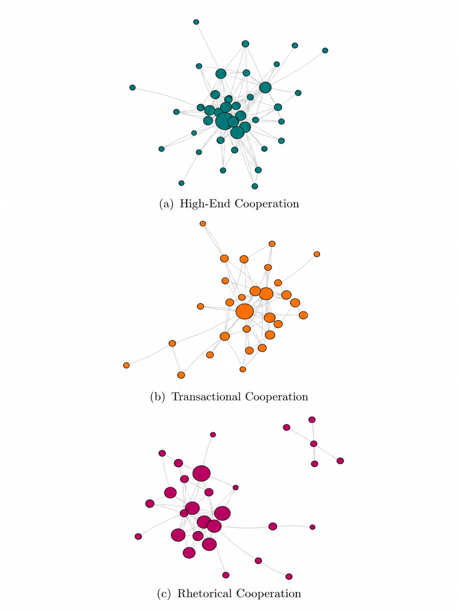
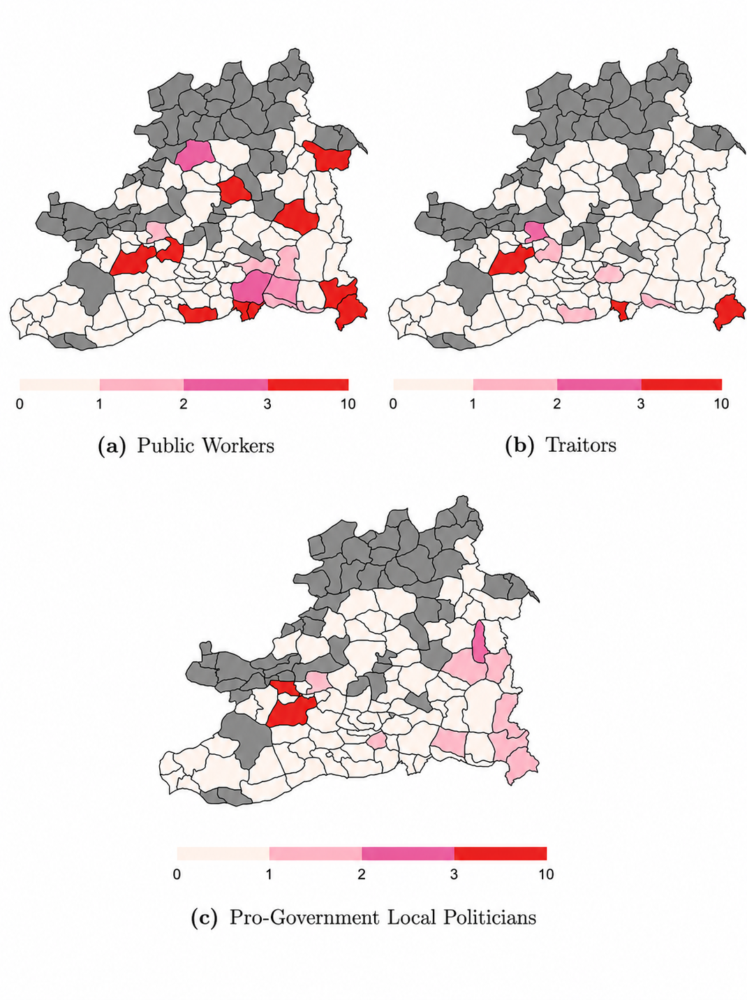

I have published numerous event-, group-, and leader-level datasets on conflict processes, both independently and with collaborators, and have additional datasets in development.

Jihadist Leaders Dataset (JLD)
The Jihadist Leaders Dataset (JLD) provides original data on the biographical attributes of 238 leaders from 110 jihadist groups. We conceptualize jihadist groups as an ideological subset of armed groups—non-state actors that use violence to achieve political objectives. This allows us to explore variation among a broad range of leaders of jihadist groups operating across Africa, Asia, and the Middle East between 1976 and 2023. Drawing on Arabic, English, French, German, Turkish, and Urdu sources, the JLD contains information on 31 leader-level variables, providing new insights into how militant leaders' backgrounds and prior experiences shape their decision-making.
Please cite as: Amjad, Maria, Mark Berlin, Sara Daub, Ilayda B. Onder, and Joshua Fawcett Weiner. 2026. “Commanders of the Mujahideen: Introducing the Jihadist Leaders Dataset.” Journal of Peace Research.
Dataset Website
Northeast Indian Militant Group Networks Dataset
The Northeast Indian Militant Group Networks Dataset is an original, disaggregated, time-series network dataset of 53 ethnonationalist militant groups active in Northeast India from 1981 through 2021. It considers all armed non-state actors, including those typically categorized as rebels, insurgents, or terrorists. It provides time variant information on 8 discrete forms of cooperation: (1) joint operations, (2) training support, (3) provision of arms and funds, (4) intelligence-sharing and logistical support, (5) joint planning or leadership meetings, (6) joint public statements, (7) participation in umbrella organizations, and (8) rhetorical support.
Please cite as: Onder, Ilayda B. 2026. “A Principal-Agent Theory and Network Analysis of High-End Cooperation Among Militant Groups.” Political Science Research and Methods.
Download Dataset
Civilian Victimization in the Kurdish Insurgency Dataset
The dataset compiles 572 incidents of the PKK's coercive acts, either directly targeting civilians or unintentionally harming civilian bystanders in 21 provinces located in southeastern Turkey with significant Kurdish-speaking populations between 2014–2019. 243 of these incidents have not been included in any other publicly available dataset. The characteristics of individuals (e.g., public worker, local politician, pro-government politician, alleged state informant, business owner) are recorded for each incident.
Please cite as: Onder, Ilayda B. 2025. “How Civilian Loyalties Shape Rebel-led Victimization of Rebel Constituencies.” Journal of Conflict Resolution 69(4): 701–730.
Download Dataset